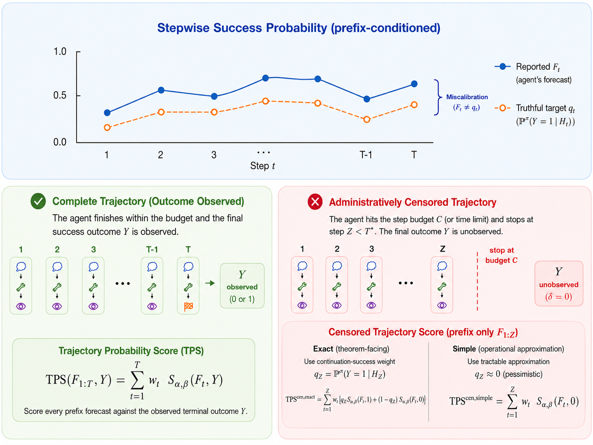

paper-1.png / paper-1.jpg
Proper Scoring Rules for Agentic Uncertainty Quantification
A family of strictly proper trajectory-level scoring rules for evaluating uncertainty in LM agents, including a censored-trace extension and negative results for common calibration metrics.